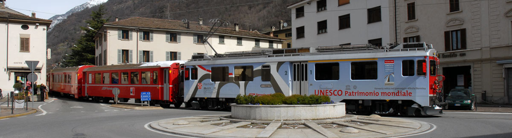

Bernina Express – Patrimonio Mondiale UNESCO
Con il termine di Patrimonio Mondiale dell’Umanità vengono identificati, ad oggi, oltre 1000 fra aree geografiche e/o siti specifici di diversa natura, in quanto vanno dalla bellezza naturale di una regione all’eredità culturale del presente e/o del passato che vogliamo trasmettere alle generazioni future. Una volta registrati dall’UNESCO, questi apparterranno a tutti i popoli del mondo intero, a prescindere dal territorio sul quale si trovano.
Tutti i siti che vengono denominati come Patrimonio Mondiale lo sono per l’unicità delle loro caratteristiche peculiari, essendo il miglior esempio e immagine del patrimonio culturale e naturale riconosciuto in tutto il mondo. I siti iscritti in questa lista, stilata dall’apposito comitato dell’UNESCO, costituiscono un patrimonio “alla cui salvaguardia l’intera comunità internazionale è tenuta a partecipare”, senza però togliere nulla alla sovranità nazionale e al diritto di proprietà della Nazione nel quale si trovano. Affinché un bene venga considerato meritevole di tale denominazione deve presentare un eccezionale valore universale e soddisfare almeno uno dei dieci criteri di selezione, stilati durante la Convenzione sul patrimonio dell’umanità del 16 novembre 1972, soddisfare le condizioni di integrità e/o autenticità, oltre a essere dotato di un adeguato sistema di tutela e di gestione che ne garantisca la salvaguardia nel tempo.
IL BERNINA EXPRESS: UN CAPOLAVORO D’INGEGNERIA FERROVIARIA
Per poter identificare un Patrimonio Mondiale e differenziarlo da una qualsiasi attrazione turistica e/o culturale sono stati stilati 10 criteri che permettono di effettuare una distinzione univoca. Fino al 2004 venivano divisi in due categorie ben precise, i primi sei si riferivano esclusivamente per i beni culturali e i restanti quattro per il patrimonio naturale, ma dal 2005 in poi sono stati raggruppati in un unico blocco. Gli attuali criteri di valutazione sono i seguenti:
1. deve rappresentare un capolavoro del genio creativo umano;
2. deve testimoniare un cambiamento considerevole culturale in un dato periodo sia in campo archeologico sia architettonico sia della tecnologia, artistico o paesaggistico;
3. deve apportare una testimonianza unica o eccezionale su una tradizione culturale o della civiltà;
4. deve offrire un esempio eminente di un tipo di costruzione architettonica o del paesaggio o tecnologico illustrante uno dei periodi della storia umana;
5. deve essere un esempio eminente dell’interazione umana con l’ambiente;
6. deveessere direttamente associato a avvenimenti legati a idee, credenze o opere artistiche e letterarie aventi un significato universale eccezionale (possibilmente in associazione ad altri punti);
7. deve rappresentare dei fenomeni naturali o atmosfere di una bellezza naturale e di una importanza estetica eccezionale;
8. deve essere uno degli esempi rappresentativi di grandi epoche storiche a testimonianza della vita o dei processi geologici;
9. deve essere uno degli esempi eminenti dei processi ecologici e biologici in corso nell’evoluzione dell’ecosistema;
10. deve contenere gli habitat naturali più rappresentativi e più importanti per la conservazione delle biodiversità, compresi gli spazi minacciati aventi un particolare valore universale eccezionale dal punto di vista della scienza e della conservazione.
La tratta del Bernina soddisfa almeno cinque di questi dieci criteri e non ci sono dubbi sulla sua integrità e sul suo sistema di gestione. L’entrata nella Lista del Patrimonio Mondiale della tratta del Bernina Express ha offerto, inoltre, la possibilità alla Valposchiavo di aprirsi verso altri e nuovi mercati.
IL BERNINA EXPRESS: UN CAPOLAVORO D’INGEGNERIA FERROVIARIA
Definita dal National Geographic Magazine come “una delle linee ferroviarie più suggestive al mondo”, la linea ferroviaria del Bernina Express che percorre la tratta Tirano–Saint Moritz è stata inerita nel 2008 fra i siti di particolare interesse culturale e naturale, diventando Patrimonio mondiale dell’UNESCO.
Il progetto di candidare la Ferrovia Retica come Patrimonio UNESCO per l’Umanità prese vita nel 2004 in Svizzera. Qualche anno dopo la richiesta venne allargata anche alla linea del Bernina, oltre a quella iniziale dell’Albula, cambiandone così nome in Ferrovia Retica nel paesaggio culturale Albula/Bernina.
Il motivo della presentazione di tale domanda è legata all’indubbia qualità di questa linea ferroviaria unica al mondo: si tratta della trasversale alpina più alta di tutta Europa e di una delle ferrovie ad aderenza naturale più ripide al mondo. La presentazione ufficiale avvenne nel dicembre 2006 e, per raggiungere un importante obiettivo transnazionale, tale proposta includeva anche Tirano. Così il 5 maggio 2007 venne inaugurata la nuova stazione di Tirano della Ferrovia retica e le nuovissime carrozze panoramiche che da quel momento si affiancarono alle già collaudate Glacier e Bernina Express. Vennero inoltre inaugurate le splendide vetture panoramiche scoperte del Bernina Express e la motrice UNESCO, messa in moto sul binario per l’occasione.
Oggi la Ferrovia retica è orgogliosa del riconoscimento ricevuto dall’UNESCO e lo sta abilmente utilizzando per attirare passeggeri e giornalisti. Inizialmente, però, i vertici dell’azienda furono piuttosto scettici all’idea di inoltrare la candidatura, in quanto non esistevano esempi concreti su cui basarsi per poter valutare le ripercussioni che una simile scelta potesse avere sul territorio e sull’azienda stessa. Si voleva evitare che diventasse una ferrovia museo, senza avere così la possibilità di potersi sviluppare ulteriormente oltre a non potersi permettere di incrementare i costi di manutenzione, già molto elevati.
Numerosi e importanti investimenti sono costantemente necessari per mantenere in buono stato l’infrastruttura e il materiale rotabile. Questo tipo di intervento è di vitale importanza soprattutto per la linea del Bernina Express, in quanto la maggior parte dei suoi 61 km di rotaie che superano il dislivello di 1800 metri, sono quasi completamente a cielo aperto. Questo fu uno dei motivi per cui, all’inizio del 2004, la Ferrovia retica decise di candidare come il Patrimonio Mondiale soltanto la linea dell’Albula, ritenuta più interessante da un punto di vista tecnico. Alla diffusione di tale notizia gli abitanti della Valposchiavo regirono con fermezza, mobilitandosi per difendere e affermare la bellezza e la peculiarità del Bernina Express, arrivando addirittura ad ottenere una revisione della decisione da parte della Direzione della Ferrovia retica.
La tratta ferroviaria dell’Albula e del Bernina, ormai ultracentenaria, è un capolavoro unico della tecnica per quanto riguarda l’ingegneria civile. Proprio lo stretto legame tra tecnica ferroviaria, paesaggio e cultura ha convinto l’UNESCO ad inserire la tratta del Bernina e quella dell’Albula – che da Saint Moritz prosegue verso Coira, la capitale dei Grigioni – nel patrimonio mondiale dell’umanità. Per l’UNESCO, le due linee s’iscrivono «in modo particolarmente armonioso nei paesaggi alpini attraversati» e rappresentano «una costruzione ferroviaria esemplare per rompere l’isolamento delle Alpi».
Storia Bernina Express: un treno di fama mondialea
A livello mondiale soltanto altre due ferrovie sono riuscite ad ottenere l’ambito marchio: la ferrovia del Semmering in Austria e la Darjeeling Himalaya Railway in India.